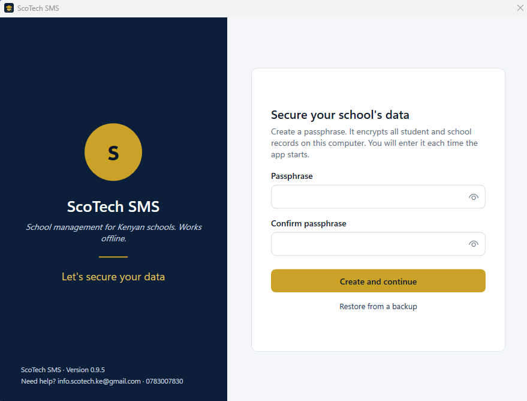

Learners and guardians
Admit learners, link guardians, assign class and stream, add photos, and bring in existing lists from Excel. Export any list back out.
For Windows · Works offline · Made in Kenya
One installer, one computer, one school. Admissions, fees and receipts, CBE marks and report cards, attendance and timetables — all kept safely on your own machine.

Built around how Kenyan schools actually work, from the first admission to the last report card.
Admit learners, link guardians, assign class and stream, add photos, and bring in existing lists from Excel. Export any list back out.
Set up fee items and structures, add charges and discounts, record cash, M-Pesa, bank and cheque payments, and print numbered receipts on A5 or thermal paper.
Balances carry forward each term. Print fee statements and see who owes what with the fee defaulters report.
Subjects, teaching assignments, exams and mark entry, with CBE performance levels (EE, ME, AE, BE) worked out for you.
Generate PDF learner progress reports ready to print and hand to parents.
Daily class registers, attendance summaries and absentee lists, and the dashboard shows any register that has not been taken today.
A staff directory, lesson times, and timetables by class and by teacher, with clash checking and PDF printing.
Enrolment, fees collected and today's attendance at a glance. Class lists, mark sheets, subject performance and fee collection reports, each as Excel or PDF.
The school database is encrypted and protected by a passphrase and recovery key. Automatic backups protect against mistakes and hardware trouble. Staff sign in with roles that decide what they can see.
No server, no IT department, no extra software to install.
Start with the free 30-day trial. No account to create.
Download for WindowsNew apps from small publishers are flagged until enough people have installed them. It does not mean anything is wrong. Click More info, then Run anyway. Setup asks for administrator permission once, to install.
Checksum (SHA-256):
After the trial, a licence from ScoTech keeps your school editable. Without one the app becomes read-only: you can still view and export records and make backups, but not add or change them. Nothing is ever locked away.
To get a licence, or for any help, call or WhatsApp 0783 007 830 or email info@scotech.co.ke.
No. You can install it and use it every day with no connection. Your school's records stay on your computer.
On the computer where you install it, in C:\ProgramData\ScoTechSMS, shared by everyone who uses that computer. The database is encrypted, and the app makes automatic backups into the same place.
No. An update is the same setup file with a newer version number. It replaces the program and leaves your school's data untouched. Uninstalling asks whether to keep or delete your data, and keeping is the default.
The app switches to read-only mode. You can still open and export records and make backups, but you need a licence to add or change them. Nothing is deleted.
Yes. It is built for Play Group to Grade 12 and reports learner performance using the CBE levels EE, ME, AE and BE.
Not at the moment. ScoTech SMS is a Windows 10 and 11 desktop app.
The online version has been replaced by this offline edition. If you have questions about records from the old version, contact us.
Email info@scotech.co.ke or call 0783 007 830 and tell us what you saw. Screenshots help.